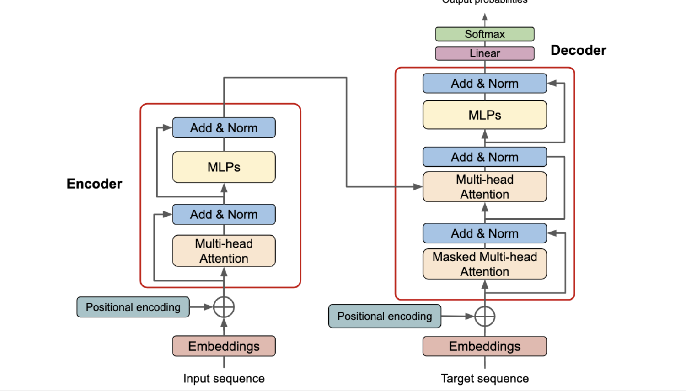
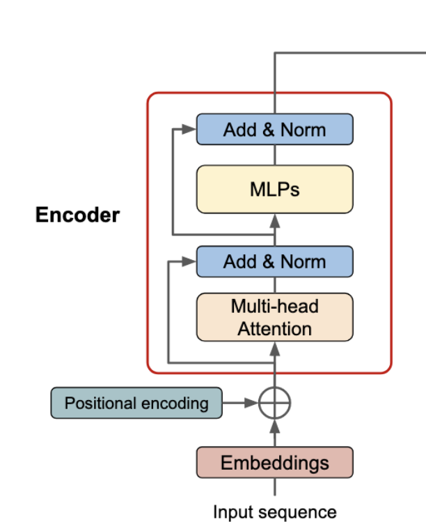

Encoder


Encoder besteht aus 6 identischen Schichten. Jede Schicht besteht aus zwei Subschichten. Die erste ist ein Multi-Head Self-Attention Mechanismus und die zweite ist ein einfacher, positionswise voll verbundener Feed-Forward Netzwerk. Zwischen den Schichten gibt es Residual-Verbindungen und Layer-Normalization. Die Eingabe wird durch eine Positional Encoding ergänzt, um die Positionsinformationen zu erhalten. Die Positional Encoding wird addiert, um die Eingabe zu erhalten. Die Ausgabe des Encoders ist die Eingabe für den Decoder.